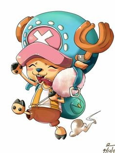
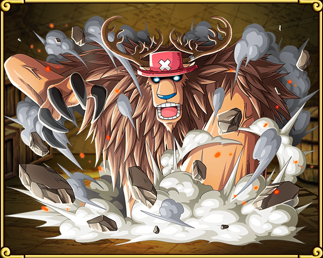
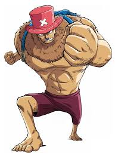
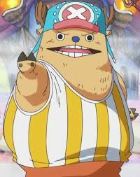
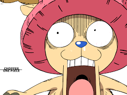
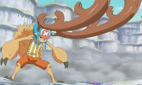
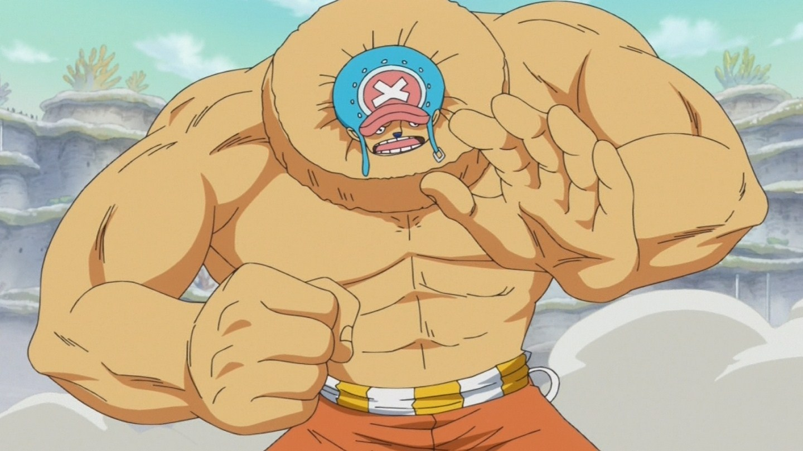

Tony Tony Chopper, also known as "Cotton Candy Lover" Chopper,[1] is the doctor of the Straw Hat Pirates. Chopper is a reindeer that ate a Devil Fruit called the Hito Hito no Mi. He came from Drum Island where he learned how to be a doctor, which also makes him the only member of the Straw Hat Pirates who was born on the Grand Line. He is the sixth member of the crew and the fifth to join Luffy, as well as being the youngest member on board. He has a bounty of Beli100[6] due to being mistaken for the crew's pet.
|  |  |  |  |
|  |  |  |
|